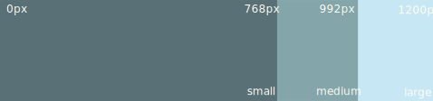
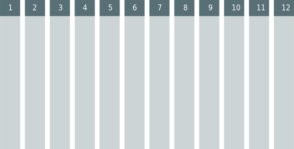
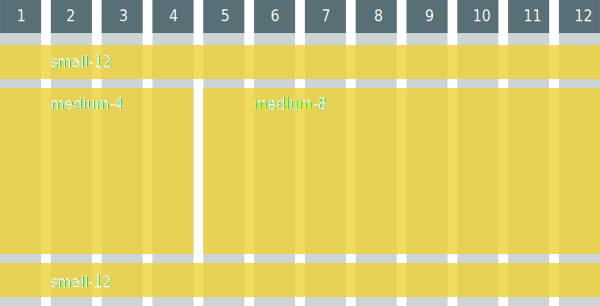
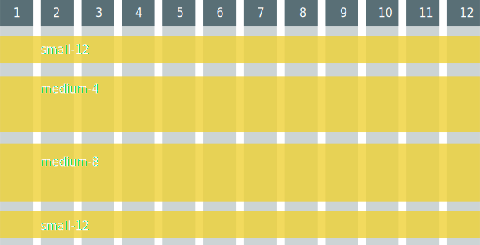

Web tools
What is best developers attribute?
Playground
- HTML
- CSS
- Images
- JavaScript
Aim
- Less data on load
- Less requests onload
- Handling of source caching
Secondary AIM
- Easy run project
- Orientation in project
- Dependecies management
- DOCs Autogenerate
- TEST enviroment
HTML
HTML
- remove useles white character
- extract list of linked file - useminPrepare
- convert HTML templates to JavaScript
CSS
SASS
CSS preprocessor
Variables SASS
| SASS | CSS |
|---|---|
|
|
Nesting SASS
| SASS | CSS |
|---|---|
|
|
Mixins SASS
| SASS | CSS |
|---|---|
|
|
Functions SASS
rgba($red, $green, $blue, $alpha)
lighten($color, $amount)
darken($color, $amount)
saturate($color, $amount)
desaturate($color, $amount)
grayscale($color)
Mixin library SASS
- Compass
- Bourbon
- Bootstrap
- Foundation
LESS
| SASS | LESS |
|---|---|
|
|
How to reduce size of CSS files?

Minification CSS
- Remove whitespaces
- Remove last ";"
Output style SASS
- nested
- expanded
- compact
- compressed
Output style SASS
compact
#main { color: #fff; background-color: #000; }
#main p { width: 10em; }
.huge { font-size: 10em; font-weight: bold; text-decoration: underline; }
Compressed
#main{color:#fff;background-color:#000}#main p{width:10em}.huge{font-size:10em;font-weight:bold;text-decoration:underline}
JavaScript
How to reduce size of JavaScript files?
minification JavaScript
- removes
- whitespace
- row ends
- dead code
- comments
- unused code
- semicolons
- mangle (scrambling) variables
- generate source map
mangle JavaScript
function getRandomItems(array, count) {
var randomArray = [], number;
while (randomArray.length < count) {
number = Math.round(Math.random() * array.length);
randomArray.push(array[number]);
}
return randomArray;
};
function getRandomItems(a, b) {
var c = [], d;
while (c.length < b) {
d = Math.round(Math.random() * a.length);
c.push(a[d]);
}
return c;
};
mangle JavaScript
- obfucsation
- uglyfication
- scrambling
minification JavaScript

Linters
Static code control
JSlint
- missing ";"
- excessive comma
- using of ==
- global variable
- missing blocks
- eval
- unsafe characters
- one var
JShint
- more configurable JSlint
Why have lint free code?
- prevention of stupid issues
- part of coding standard
- check before minification
- prevent issues caused by minification
Douglas Crockford: JavaScript good parts

Beautifiers
Code formatting
Beautifiers
- so long coding standard (only setup beautifier)
- end of tab/space games
- end of inidividuality mirroring in code
Beautifiers
- indentation
- max empty lines
- brackets formatting
Beautifiers
- Javascript Format
- SASS beautify
- HTML pretify
NodeJs
NodeJs
package.json
$ npm install module
$ npm install
usemin NodeJs
Search for code blocks
<script src="js/app.js"></script>
<script src="js/controllers/thing-controller.js"></script>
<script src="js/models/thing-model.js"></script>
<script src="js/views/thing-view.js"></script>
<!-- endbuild -->
autoprefixer NodeJs
Autoprefixer parses CSS and adds vendor-prefixed CSS properties (using the CanIUse database).{
options: {
browsers: ['last 2 versions', 'ie 8', 'ie 9']
}
}
concat NodeJs
Concatenates files.uglify NodeJs
Minify files with UglifyJS.filerev NodeJs
adds revision to linked files{
'img1.png': 'tmp/img1.59bcc3ad.png',
'img2.png': 'tmp/img2.060b1aa6.png'
}htmlmin NodeJs
Minifies HTML using html-minifier.Bower
Related libs management
Bower
$ bower init
$ bower install jquery
$ bower install jquery --save
bower.json
{
"name": "rr",
"version": "0.0.0",
"dependencies": {
"angular": "1.2.16",
"es5-shim": "~3.1.0",
"angular-sanitize": "1.2.16",
"jquery": "~2.1.1"
},
"devDependencies": {
"angular-resource": "1.2.16",
"angular-route": "1.2.16"
},
"appPath": "app"
}
Bower
Version is important!
Runners
Runners
- Grunt
- Gulp
- broccoli
- brunch
- cake
- jake
- mimosa
Grunt vs. Gulp
| Grunt | Gulp |
|---|---|
| task runner | pipeline |
| config file | js code |
Grunt
grunt-cli
$ npm install -g grunt-cli #puts the grunt command
Grunt
Runner
$ npm init #creates package.json
$ npm install grunt --save #adds grunt to package.json
Scaffolding
Scaffolding
- folder structure
- build configuration
- generators
Scaffolding
- grunt-init
- Yeoman
- Ember-cli
Common JS Grunt
#run once
$ npm install -g grunt-init #grunt init cli
$ git clone https://github.com/gruntjs/grunt-init-jquery.git \
~/.grunt-init/jquery #download template
$ grunt-init commonjs #create a commonjs
$ npm install #install modules from template
$ grunt #run grunt task
Yeoman Scaffolding
#run once
$ npm install -g yo #install yeoman
$ npm install -g generator-angular #install angular template
$ yo angular [app-name] #create angular app
$ npm install #node dependencies
$ bower install #bower dependencies
Yeoman Scaffolding
- app
- bower_components
- node_modules
- test
- .bowerrc
- .jshintrc
- bower.json
- Gruntfile.js
- package.json
Yeoman Scaffolding
$ grunt serve
$ grunt build
$ grunt serve:dist
$ grunt test
Testing
Unit testing
- Karma runner
- Jasmine
E2E (functional) testing
- Protractor
- Selenium
CSS Frameworks
Breakpoints
Grid CSS Frameworks
Large Grid CSS Frameworks
Small Grid CSS Frameworks
Grid in code
CSS Frameworks
Bootstrap CSS Frameworks
UI elements
- Dropdowns
- Buttons
- Navbars
- Pagination
- Progress bars
- Alerts